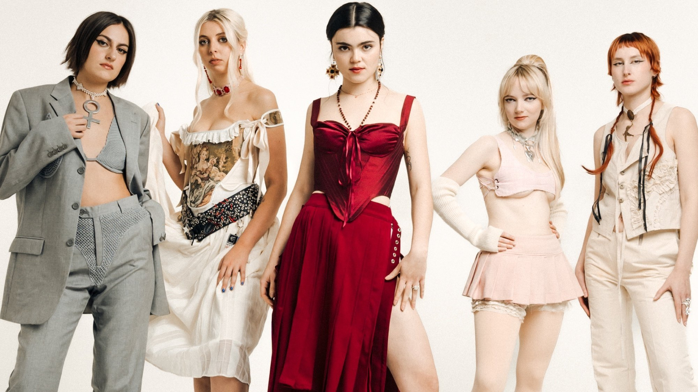
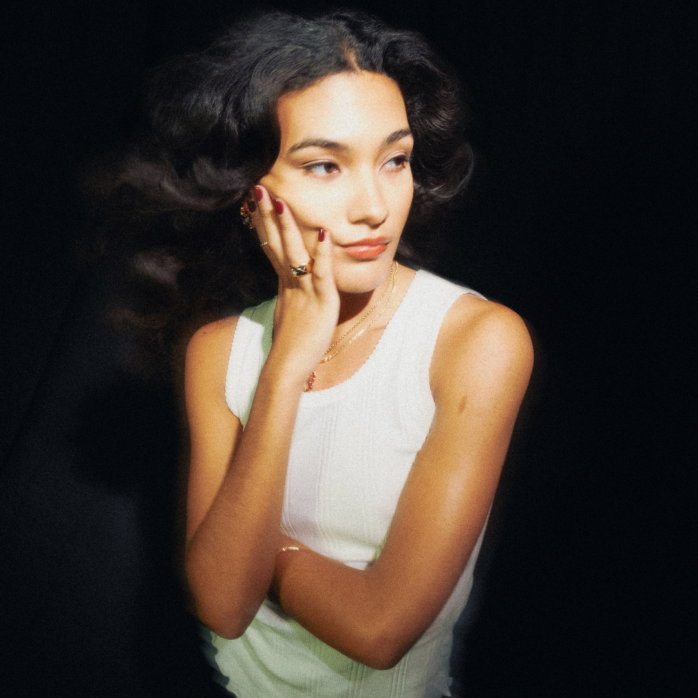

Bienvenido a descubriendo música
Esta Musica y Cantantes fue elejida a base de mi gusto,
pero te invito a buscar muchos más generos musicales y cantantes con distintos estilos, porque la musica es arte, y el arte no debe pasar por desapercibido.
Ingrese Nombre: ¡Explora nuevos y viejos talentos musicales!
Banda emergente: The Last Dinner PartyGénero: Indie RockRecomendación: Álbum "Prelude to Ecstasy"Escuchar en: Spotify y en YouTube

Banda Emergente: LovejoyGénero: Indie inglesaRecomendación: Canción: Portrait of a Blank SlateEscuchar en: Spotify y en YouTube
Banda Emergente: Big SleepGénero: El dream pop, soul, pop y R&B.Recomendación: Canción: Tall Stories Escuchar en: Spotify y en YouTube
Cantante mergente: KhamariGénero: Rhythm and bluesRecomendación: Cancion: These Four Walls Escuchar en: Spotify y en YouTube
Cantante mergente: Olivia DeanGénero: Neo soulRecomendación: Cancion: Dive Escuchar en: Spotify y en YouTube

Cantante mergente: Mae StephensGénero: PopRecomendación: Cancion: If We Ever Broke Up Escuchar en: Spotify y en YouTube
Los mejores de los mejores en su área
Género Banda
Rock The Rolling Stones
Pop Michael Jackson
Jazz Miles Davis
Electrónica Daft Punk
Sabias que...
¡Déjanos tu opinión!
Por favor completa la siguiente información: